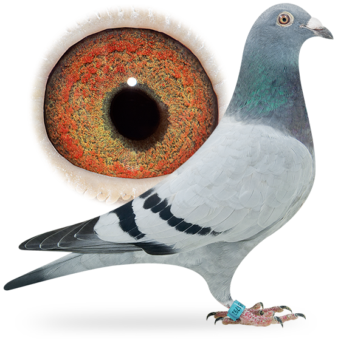

Hiperblog
Tu blog de cabecera
Soper blogs
Este es el titulo e interesante del post
Y este es el parrafo de inicio donde veremos las maravillas que se pueden hacer con ramas
Añadiendo un nuevo parafo para la cabecera